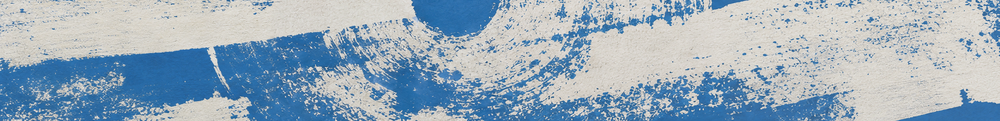

SYNO is a contemporary art institution and working infrastructure for artistic production, public programming, and cross-regional circulation
Rooted in Cyprus’s layered histories and shaped by the diverse communities that constitute the island today, SYNO functions as a living infrastructure for making, learning, and co-creation — a place where cultural work develops through reciprocity and respect for individual dignity and agency
SYNO’s growth is incremental and open. The foundation will continue to evolve beyond the 2026–2027 season, shaped by the relationships, exchanges, and feedback developed throughout its soft-launch year

One of the first steps is the launch of Cyprus Contemporary Map in fall 2026
We see it as a continuously evolving platform developed with Cyprus’s contemporary art ecosystem, bringing together institutions, independent spaces, production sites, resources, and opportunities
Built through contribution and feedback rather than as a fixed or authoritative account of the field, it is intended as a shared tool for visibility, access, and connection
Another core initiative is the development of the Cyprus Artist Registry, where Cypriot and Cypriot diaspora artists can share their profiles, including artist statements, CVs, and portfolios
The registry will open for non-juried submissions in autumn 2026. To mark this step, we are also presenting the Annual Open Call for Cypriot and Cypriot diaspora artists. The results of the inaugural edition will be announced in October 2026. All shortlisted artists will also be included in the SYNO Yearbook, to be published by the end of 2026
The Cyprus Contemporary Map and the Cyprus Artist Registry are free and open to everyone — artists, institutions, galleries, non-profits, and audiences alike